Student Guide to Pandoc
This is a detailed, topic-based guide to Pandoc aimed at students in Creating User Documentation (ENGL3814) at Virginia Tech.
Installing Pandoc
This task includes instructions on how to download and install Pandoc on your computer. There are two sections. One is for Windows users the other is for macOS users. There are also optional steps in each section to install a LaTeX program. Installing a LaTeX program is highly recommended, as Pandoc creates PDFs using LaTeX. The LaTeX program we will be installing is MiKTeX.
Windows
This task includes instructions on how to download and install Pandoc for Windows users. There are also optional instructions for installing MiKTeX.
Requirements
- Computer
- Windows Operating System
- Internet Access
Steps to Install Pandoc
-
Note: The webpage should look like this.

Download the pandoc-X.XX.X.X-windows-x86.msi file by clicking on the file name. This is the installer file.
Note: X.XX.X.X refers to the version number. It is 2.17.1.1 in the image above.
Run the installer by double-clicking on the downloaded file.
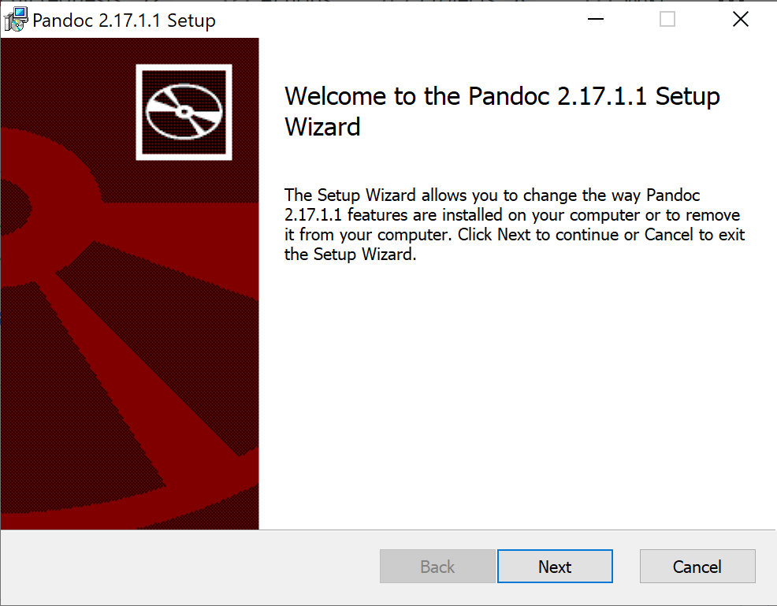Note: A new window should pop up. This is what it should look like.
Press Next to continue.
Follow the directions given by the Setup Wizard to complete your installation.
Note: This program automatically installs Pandoc for you.
Lastly, to check if Pandoc was installed, type “pandoc -v” in your terminal. If Pandoc was installed correctly, you should see that the next line in the terminal is: “pandoc.exe X.XX.X.X” where the X’s represent the version number. If an error occurs, return to step 1 and try again. > Note: You can access the Windows PowerShell terminal with Windows key + X. Select Windows PowerShell from the menu that pops up. (See image below for reference).
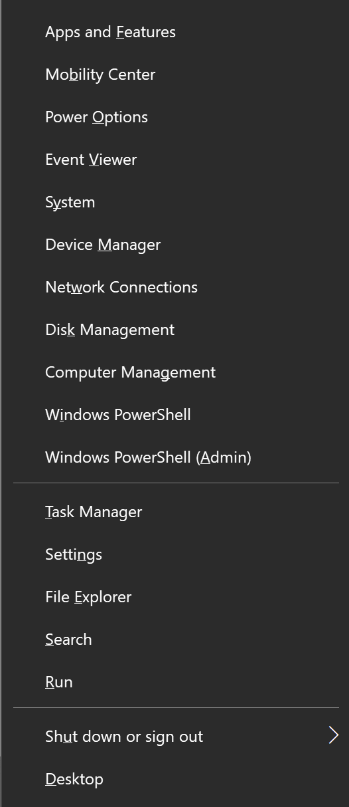
Optional Steps to install MiKTeX (recommended)
-
Note: The webpage should look like this.

Under the Windows tab, select the Installer tab.
Press the Download button to download the installer.
Run the installer by double-clicking on the downloaded file.
Note: A new window should pop up. This is what it should look like.

Read the conditions and check the “I accept the MiKTeX copying conditions.” option.
Press Next to continue.
Follow the instructions in the installer to complete the installation.
Once you have reached this page in the installer, you are done. MiKTeX has been installed!
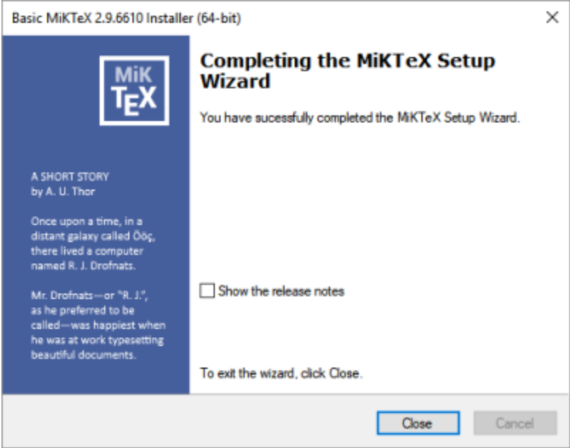
macOS
This task includes instructions on how to download and install Pandoc for macOS users. There are also optional instructions for installing MiKTeX.
Requirements
- Computer
- macOS Operating System
- Internet Access
Steps to Install Pandoc
-
Note: The webpage should look like this.
Download the pandoc-X.XX.X.X-macOS.pkg file by clicking on the file name. This is the installer file.
Note: X.XX.X.X refers to the version number. It is 2.17.1.1 in the image above.
Run the installer by double-clicking on the downloaded file.
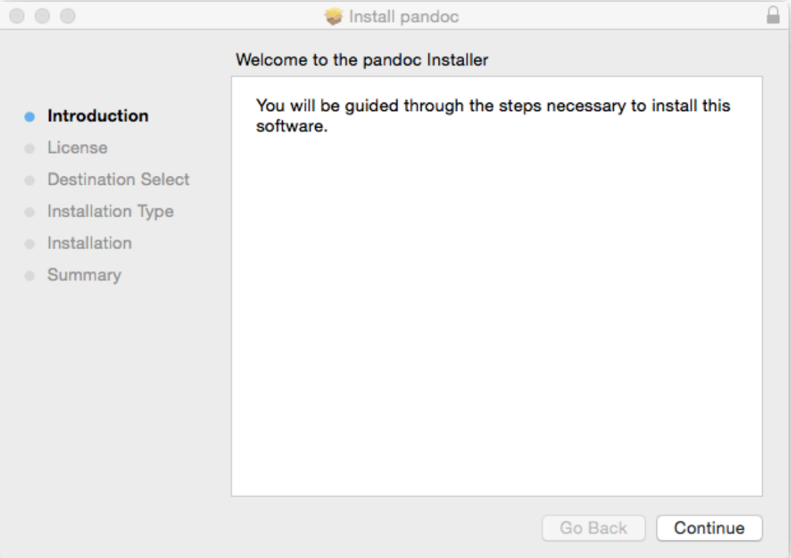Note: A new window should pop up. This is what it should look like.
Press Continue to continue.
Follow the directions given by the Installer to complete your installation.
Note: This program automatically installs Pandoc for you.
Lastly, to check if Pandoc was installed, type “pandoc -v” in your terminal. If Pandoc was installed correctly, you should see that the next line in the terminal is: “pandoc.exe X.XX.X.X” where the X’s represent the version number. If an error occurs, return to step 1 and try again.
Note: You can access the terminal on a Mac by opening the Launchpad, typing Terminal in the search field, and clicking Terminal.
Optional Steps to install MiKTeX (recommended)
-
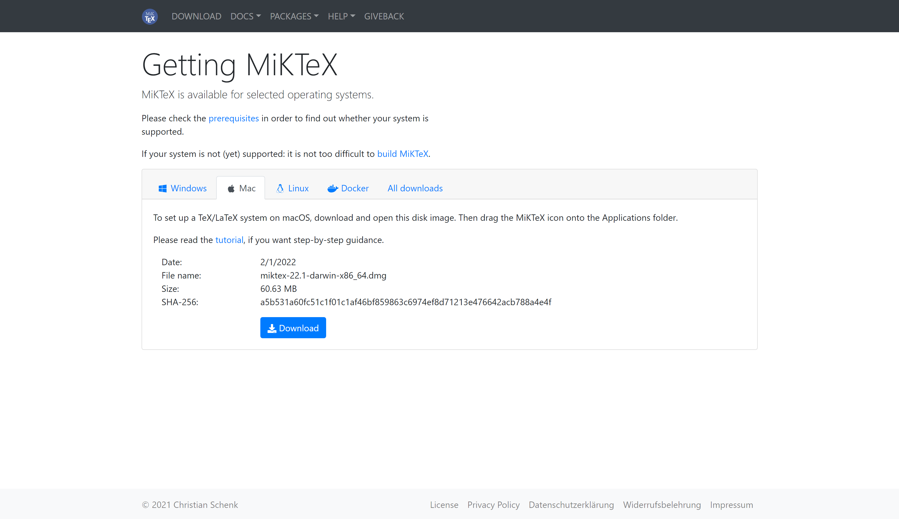Note: The webpage should look like this.
Select the Mac tab.
Press the Download button to download the disk image (.dmg) file.
Double-click on the downloaded disk image (.dmg) file.
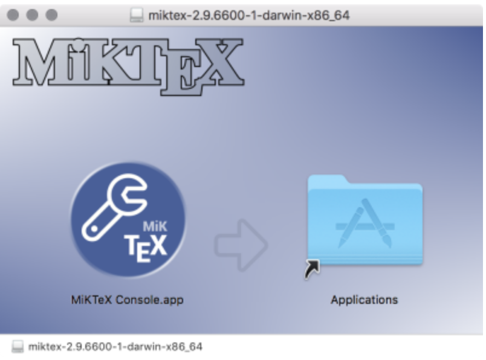Note: A new window should pop up. This is what it should look like.
Drag the MiKTeX icon onto the Applications folder icon.
Note: This will install the MiKTeX Console application and all required files.
Run the MiKTeX Console application from Launchpad.
Note: A new window should pop up. This is what it should look like.

Select the Finish private setup option.
MiKTeX has been installed!
Setting Up a Writing and Publishing Environment
To easily convert files we’ll be using a writing and publishing environment. Visual Studio Code is a popular coding editor and we’ll be using it with Pandoc to convert files. These steps will walk you through downloading, installing, and setting up Visual Studio Code.
Requirements
- Computer running either Windows or Mac
Steps
Go to the Visual Studio Code website.
Download Visual Studio code for your machine.
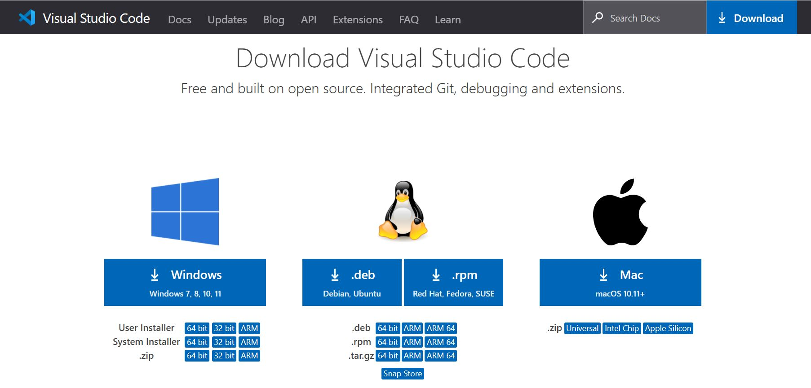Install the package.
Open the program.
Navigate to the extensions tab on the left of the screen.
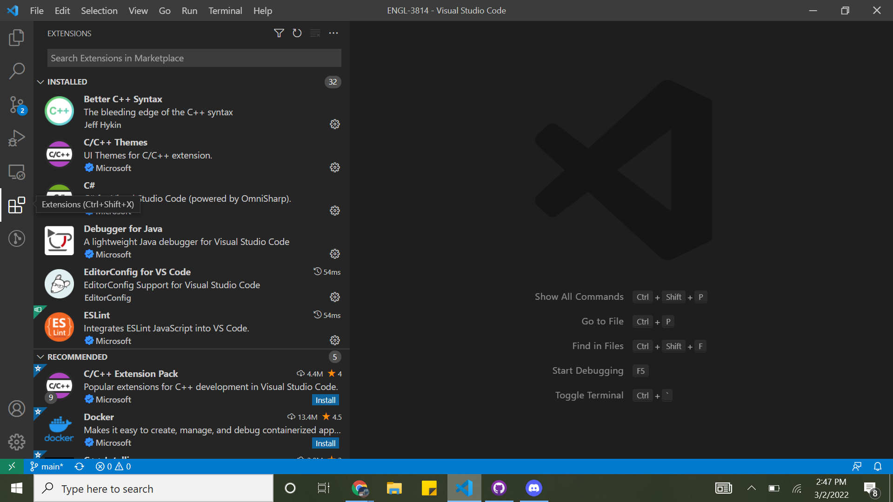Install any useful extensions you might need.
Note helpful extensions for markdown are
markdownlintandMarkdown All in One.Customize with themes (Optional).
Open the folder your files will be in or create a new folder.
Add a new markdown file.
Add content.
What is Pandoc?
When writing documents for different occasions, it is often necessary to know how to convert a document from one form to another. While some professors may require PDF files, others may require Markdown files. So, with the help of Pandoc converting documents becomes a simple task.
Pandoc is a tool that can be installed on your computer to convert files from one format to another. Pandoc works with formats such as HTML, ebooks, documentation formats, bibliography formats and many more.
One example of how students have used Pandoc in the past was for a project. This project required converting a Microsoft Word file (.docx) to a Markdown file (.md). After downloading and checking for installation, by typing the correct conversion code into the computer terminal, Pandoc converted the students’ files from Microsoft Word to Markdown.
Some benefits of Pandoc include:
- It can convert formats from and to a a variety of different formats
- Its ability to convert citations into a properly formatted citation
- The option to customize using a template system and writing filters
- Works with slide show formats as well as text and data formats
How to write in Markdown
This is a general tutorial for writing in Markdown syntax. It will detail the use of basic Markdown syntax elements. Additionally, since Pandoc understands an extended version of Markdown syntax, some useful extensions of traditional Markdown syntax will be sectioned at the end for use with Pandoc.
Headings
Headings are created by beginning a line with hashtags (#). The heading name must be separated from the hashtags by a blank space. The number of hashtags represents the level of the heading. For instance, a level one heading would be written as “# Level 1 Heading”.
| Heading Level | Markdown Syntax |
|---|---|
| Level 1 | # Level 1 Heading |
| Level 2 | ## Level 2 Heading |
| Level 3 | ### Level 3 Heading |
| Level 4 | #### Level 4 Heading |
| Level 5 | ##### Level 5 Heading |
| Level 6 | ###### Level 6 Heading |
The table above illustrates syntax for various level headings. Note that markdown only supports six levels of headings.
Paragraphs
Paragraphs can be created by using a blank line to separate blocks of text.
For instance, these two paragraphs have been separated by a blank space and thus will be rendered as such.
Note: If you must indent a paragraph use “
”. This bit of text will add 4 empty spaces.
This sentence has been indented using this technique.
Line Breaks
Line breaks can be used by adding two or more blank spaces at the end of a line and then pressing return.
This line has been separated with a line break.
Bold and Italic Emphasis
To bold text, surround it with two asterisks. To italicize text, surround it with one asterisk. To both bold and italicize a piece of text, surround it with three asterisks.
| Markdown Syntax | Output |
|---|---|
*This* is italicized. |
This is italicized. |
**This** is in bold. |
This is in bold. |
***This*** is in bold and italicized. |
This is in bold and italicized. |
The table above illustrates various ways to emphasize text.
Block Quotes
To create block quotes, begin paragraph with >.
For example, in markdown
> This is a block quote.
For a block quotes with blank line, begin the blank line with >. Also, block quotes can be nested by adding >> in front of the nested quote. See the example below.
> This is a block quote
>
> with a blank line
>> and a nested quote.
Lists
Both unordered lists and ordered lists can be created in Markdown. Lists can also be indented to create nested lists.
Ordered Lists
In Markdown, to create an ordered list, you must begin each list element with a number and a period. The numbering must begin with number one, but the order following number one does not matter.
An ordered list in Markdown syntax is as follows:
1. One
2. Two
3. Three
OR
1. One
1. Two
1. Three
OR
1. One
75. Two
35. Three
When rendered, the lists all look like this:
- One
- Two
- Three
Unordered Lists
Unordered lists can be created by adding dashes (-), asterisks (*), or plus signs (+) before each list element.
An unordered list in Markdown syntax is as follows:
- One
- Two
- Three
OR
* One
* Two
* Three
OR
+ One
+ Two
+ Three
When rendered, the lists all look like this:
- One
- Two
- Three
Here is an example of a nested list.
Markdown Syntax:
1. One
2. Two
- Indented One
- Indented Two
3. Three
Output:
- One
- Two
- Indented One
- Indented Two
- Three
Code and Escaping Syntax
To escape any Markdown rendering for bits of code, surround your text with backticks (`).
For example: *This* will not be in italics since I surrounded it with backticks.
You can also use backslash (\) to escape other characters as:
backslash \
backtick `
asterisk *
underscore _
curly braces { }
brackets [ ]
angle brackets < >
parentheses ( )
hashtag #
plus sign +
dash -
period .
exclamation mark !
pipe |
Markdown Syntax: \# Without a backslash, this would be a heading.
Output: # Without a backslash, this would be a heading.
Horizontal Rule
In order to insert a horizontal rule in Markdown, you must use three or more asterisks, dashes, or underscores on a line, like so:
***
---
___
A horizontal rule is below this.
Links
For links, you can enclose link text in brackets and follow it with the URL in parentheses.
For instance: [Google](google.com)
will look like: Google
You can also link to other files by replacing the link address with a file name. Make sure the file is accessible in your current working directory.
Images
For images, you can add an exclamation mark (!), followed by image alt text enclosed by brackets, and then followed by the image file path or URL enclosed by parentheses. You can also add a title to the image with quotations marks besides your path or URL. See below for an example.
Markdown Syntax:

Output: 
Finally, you can link images to a URL by adding the link address enclosed by parentheses immediately following the image. You must also surround the image code with brackets. See the following example.
Markdown Syntax:
[](https://www.markdownguide.org/getting-started/)
Output:
Strikethrough
You can strikethrough text by surrounding the text with two tildes.
For example: ~~This~~ is using strikethrough.
Output: This is using strikethrough.
Tables
To create a table, use three or more hyphens to create the column headers, and use pipes to create each column. See below for an example.
Markdown Syntax:
| Header 1 | Header 2 |
| -------- | -------- |
| Element1 | Element2 |
| Element3 | Element4 |
Output:
| Header 1 | Header 2 |
|---|---|
| Element1 | Element2 |
| Element3 | Element4 |
Pandoc Extended Syntax
Pandoc understands an extended version of Markdown, so here are some useful extensions of the syntax which will work with Pandoc.
Setext-style Headings
You can create headings in setext-style by following a heading with a line of equal signs (for level 1 headings) or dashes (for level 2 headings).
For example:
This is a level 1 heading
=========================
This is a level 2 heading
-------------------------
Definition Lists
Pandoc allows for definition lists with the following syntax.
Term 1
: Definition 1
Term 2
: Definition 2
Second paragraph of definition 2.Multiline Tables
Pandoc also supports multiline tables. Table rows may span multiple lines of text. See below for an example on how you may format one.
-------------------------------------------------------------
Centered Default Right Left
Header Aligned Aligned Aligned
----------- ------- --------------- -------------------------
First row 12.0 Example of a row that
spans multiple lines.
Second row 5.0 Here's another one. Note
the blank line between
rows.
-------------------------------------------------------------
Table: Here's the caption. It, too, may span
multiple lines.Grid Tables
Grid Tables can also be created with Pandoc. A row of equal signs must separate the headers, and plus signs must indicate corners of cells. See below for an example.
: Sample grid table.
+---------------+---------------+--------------------+
| Fruit | Price | Advantages |
+===============+===============+====================+
| Bananas | $1.34 | - built-in wrapper |
| | | - bright color |
+---------------+---------------+--------------------+
| Oranges | $2.10 | - cures scurvy |
| | | - tasty |
+---------------+---------------+--------------------+Cell elements may contain multiple paragraphs, code blocks, lists, etc. However, cannot span multiple columns or rows.
Superscripts and Subscripts
Superscripts can be created by surrounding the superscript with carets (^). Subscripts can be creating by surounding the subscript with tildes (~).
For example: H~2~O is a liquid. 2^10^ is 1024.
TeX Math
Any text surrounded by two dollar signs ($) will be treated as TeX math. The output will depend on the output format. There must not be a whitespace after the first dollar sign or before the second one.
Example: $2+2=4$
For example, in Docx format, the text will be rendered using OMML math markup.
More Resources
For more information about Markdown syntax, a good resource is the official Markdown Guide.
For more information about Pandoc’s extended syntax, a good resource is the official Pandoc Manual.
How to Publish to EPUB, HTML, Word, and PDF
This section is a comprehensive guide on how to convert Markdown files to EPUB, HTML, Word, and PDF files. At the end of this process you will have the knowledge necessary to effortlessly make this conversion in the future.
Requirements
The following are assumed to have been installed/obtained before beginning the guide
- Pandoc
- Markdown File
- pdfLatex FOR PDF PUBLISHES ONLY
Publishing
Open your
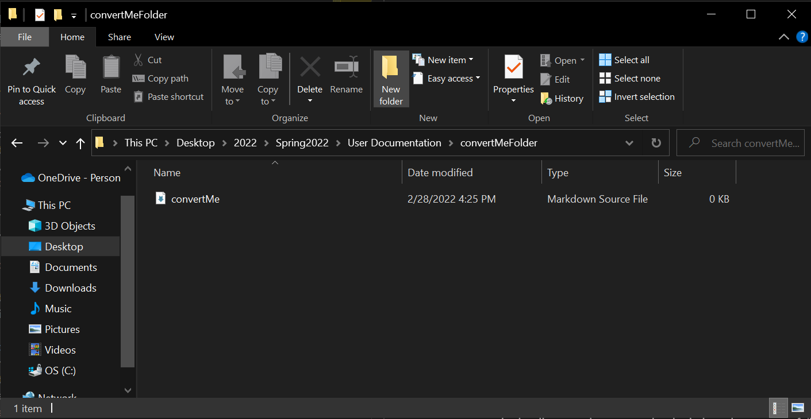File Explorerand locate the Markdown file that you would like to convert. Your screen should look similar to the image below (where the “convertMe” file is YOUR file).Click on the
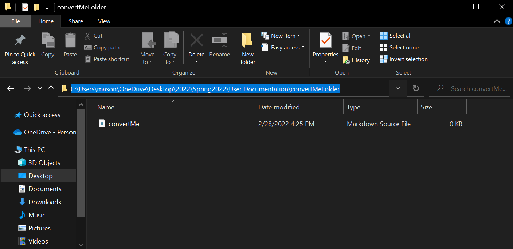Pathof your current directory in your file explorer. This can be located directly above the files shown, and is shown highlighted in the image below.Type
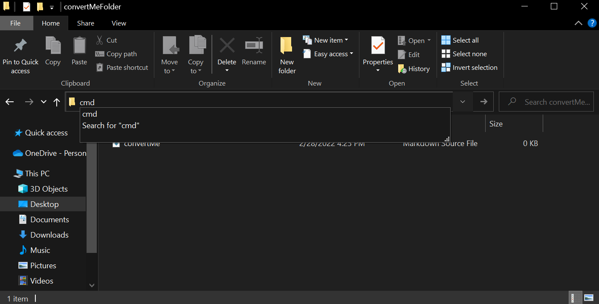cmdover your highlighted path. Once it is highlighted from the previous step, all you must do is begin typing. Once this is complete, your screen should look similar to the image below.Press
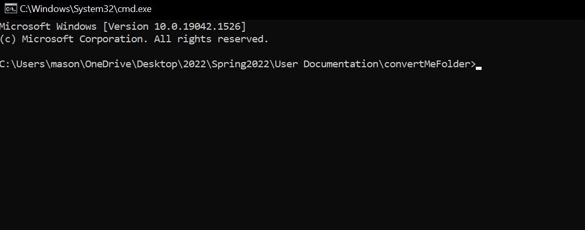enter. This will open the command prompt at the directory that you were in during the File Explorer session. Once this is complete, your screen should look similar to the image below.Type the appropriate command into the command prompt. The generalized formula for your command is the following
pandoc -s YOURFILE.md -o YOUROUTPUT.FILETYPEThe YOURFILE.md should be renamed based upon the name of the Markdown file you are attempting to convert. In our examples below, this file is named “convertMe”.
The YOUROUTPUT.FILETYPE should be renamed based upon the desired name of your output file and the type of file you are converting to. In our examples below, the file is named “convertedFile” and is being converted to Word.
For EPUB
pandoc -s convertMe.md -o convertedFile.epubFor HTML
pandoc -s convertMe.md -o convertedFile.htmlFor Word
pandoc -s convertMe.md -o convertedFile.docxFor PDF must have pdfLatex installed
pandoc -s convertMe.md -o convertedFile.pdfOnce this is complete, your screen’s command should look similar to the image below.
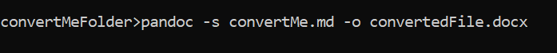Press
enter. This will make Pandoc execute the command. The output file will now be present in the folder of your original Markdown file.If you are receiving an error upon hitting
enteryou have made some small mistake in the previous steps. Carefully retrace your steps and be certain you are typing everything exactly as expected into the command prompt.Once this is complete, your screen should look similar to the image below.
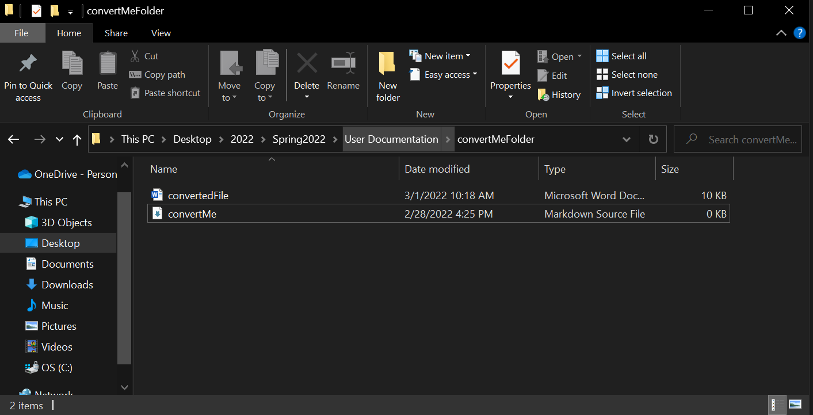
Congratulations
You have successfully converted your file.